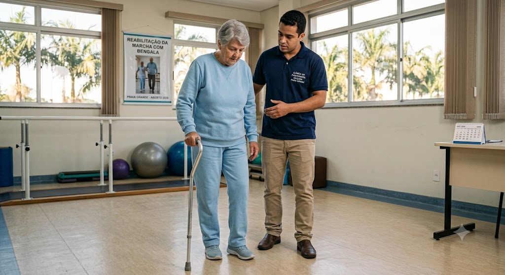
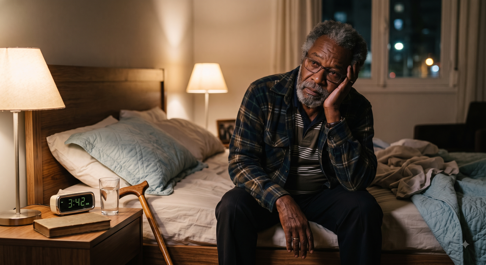
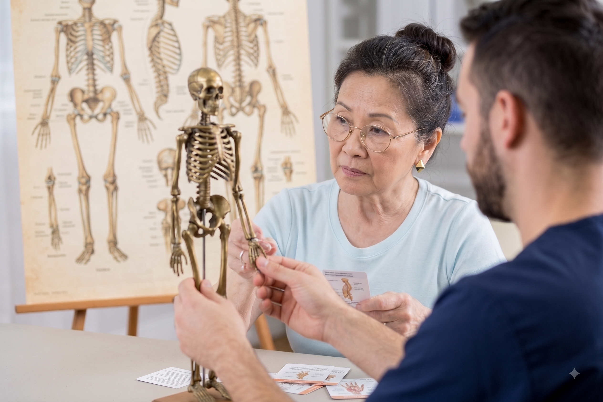

Cuidado médico contínuo e personalizado em cada fase da sua trajetória. Integramos saúde física, cognitiva e emocional para que você desfrute da vida com máxima autonomia
Conheça mais sobre mim ↗


Sou a Dra. Raiane dos Santos Vicente, médica apaixonada pelo cuidado com o idoso. Acredito que o envelhecimento deve ser acompanhado de dignidade, autonomia e, acima de tudo, qualidade de vida.
Meu foco é proporcionar um atendimento integrado, que olhe para o paciente de forma global, apoiando não apenas sua saúde física, mas também emocional, e orientando toda a rede de apoio e familiares.
"O atendimento da Dra. Raiane devolveu a tranquilidade para a nossa família. Um olhar humano, técnico e extremamente atencioso."
— M. S., filha de paciente
"Nunca vi uma médica tão dedicada. A paciência e a clareza nas explicações nos deram muita segurança no tratamento do meu pai."
— J. P., filho de paciente
"Profissional impecável. O foco não é apenas na doença, mas na qualidade de vida e no conforto em casa."
— A. L., paciente